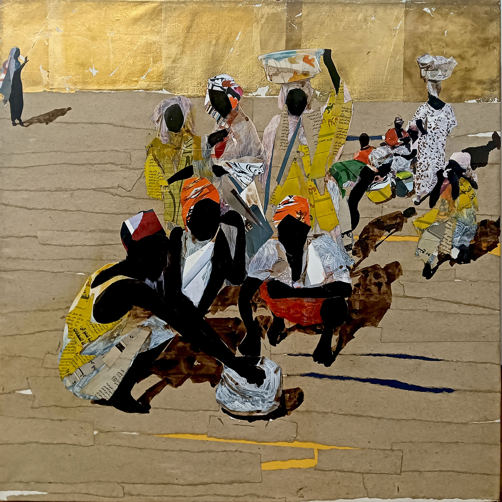
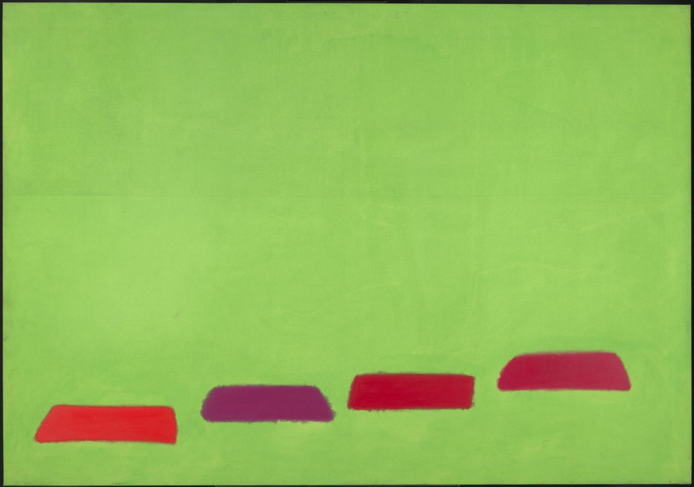

2026
The Loud and the Silent: What Factors Impact the Support to Victims' Claims in Academic Spaces
Journal of Gender-Based ViolenceForthcoming
Gender, work and technology.
I am a PhD researcher in Communications and Media Studies at Universitat Pompeu Fabra, Barcelona. My dissertation, Matters Before Methods, studies how technologies and social media reproduce gender oppression. Through my work, I explore the intersections of new technologies, labour struggles and gender politics within the fields of digital humanities and sociology. I visited King's College London in Winter/Spring 2026.
I have also developed artistic projects related to these themes, including a multimedia audiovisual piece at the Centre de Cultura Contemporània de Barcelona. Before pivoting to research, I trained as a telecommunications engineer.
I will be in the job market for academics in 2026/27. I am particularly interested in domestic work, care economies, AI and algorithmic knowledge.
The Loud and the Silent: What Factors Impact the Support to Victims' Claims in Academic Spaces
Journal of Gender-Based ViolenceForthcoming
Theories of Women's Oppression Between Marxism and Feminism: Finding a New Approach for Understanding Gender
Science & Society

Women's Safety Is Not a Right: Types of Antifeminist Discourse in Contemporary Social Media
In Soto-Sanfiel, Masanet & Vázquez-Tapia (Eds.), Perspectivas globales sobre género y sexualidades en los medios, Peter LangForthcoming
Women Are Too Easily Offended, but Robots Aren't: A Feminist Critique of Sentiment Analysis
AI & Society
